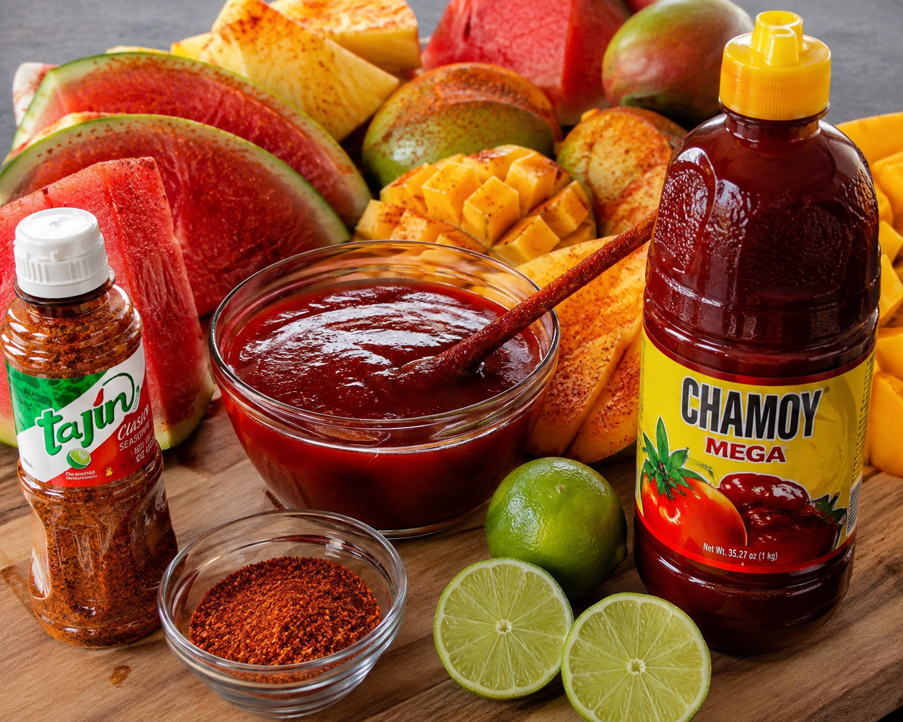

In the Shop
Hecho Con Sabor.
Hecho Con Corazón.
Made with flavor. Made with heart. This is Paletería Los Freseros.

Mexican Inspiration
Rooted in Paletería Tradition
Paletas and nieves are a cornerstone of Mexican dessert culture — fruit-forward, handmade, and built around what's fresh. Los Freseros carries that tradition forward: chamoy, Tajín, and fruit combinations that come from real Mexican mercado culture, not a themed menu.
Every antojito and bebida on the menu is a nod to the flavors of a Mexican neighborhood dessert shop — mangonadas, elotes, and aguas frescas done the way they're meant to be done.
What Makes It Different
Fresh Fruit. Real Cream. No Shortcuts.
Fresh Fruit
Strawberry, mango, watermelon — the fruit does the work.
Real Chamoy & Tajín
Sweet, sour, and a little bit of heat, balanced right.
House-Made Cream
Nieves and bionicos made with real cream, not shortcuts.
Made to Order
Every paleta loca and mangonada built when you order it.
Community
A Piece of the Santa Cruz Mountains
Ben Lomond is a small mountain town, and Los Freseros is built to be a neighborhood stop — the place you pull off Highway 9 for something cold on a warm day. It's family-friendly, unpretentious, and made for regulars.
Sharing a paleta or a mangonada is part of the point — this is dessert meant to be enjoyed together.